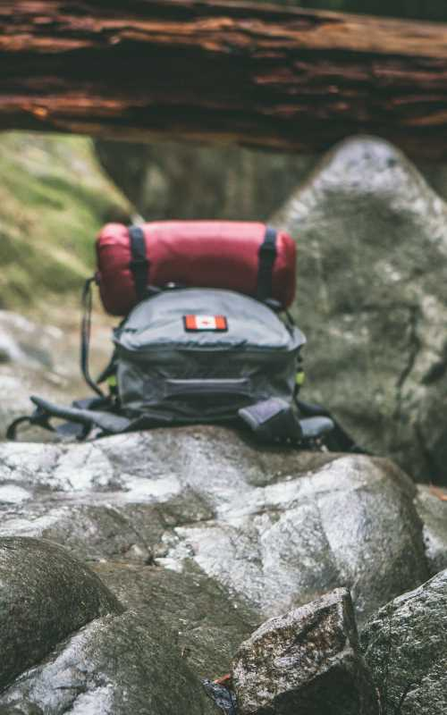

Pakkeliste
- Svipptursekk
- Toalettsaker, tannbørste, tannkrem og såpe, sjampo
- Håndkle (mindre håndkle og badehåndkle)
- Sovepose
- Liggeunderlag
- Ryggsekk
- Treningstøy (treningsbukse, -jakke og –shorts)
- T-skjorter
- Underbukseskift
- Sokkeskift
- 2 langbukser (for eksempel olabukse, inkl. reisebuksa)
- Badebukse
- En ”robust” shorts (utover badebuksen, til leirliv)
- Kniv til å ha i beltet
- Belte til bukse
- Tykk genser / fleecegenser
- Ulltrøye og stilongs
- Ytterjakke / vindjakke
- Regntøy / vind og vanntet jakke og bukse
- Gummistøvler (uten hull) og sokker til dem
- Lue, caps
- Dyp og flat tallerken, kopp og bestikk (uknuselig/plast)
- Skrivesaker
- Solkrem
- Myggstift / myggolje
- Frivillig: lommelykt, fotoapparat, radio, gitar
